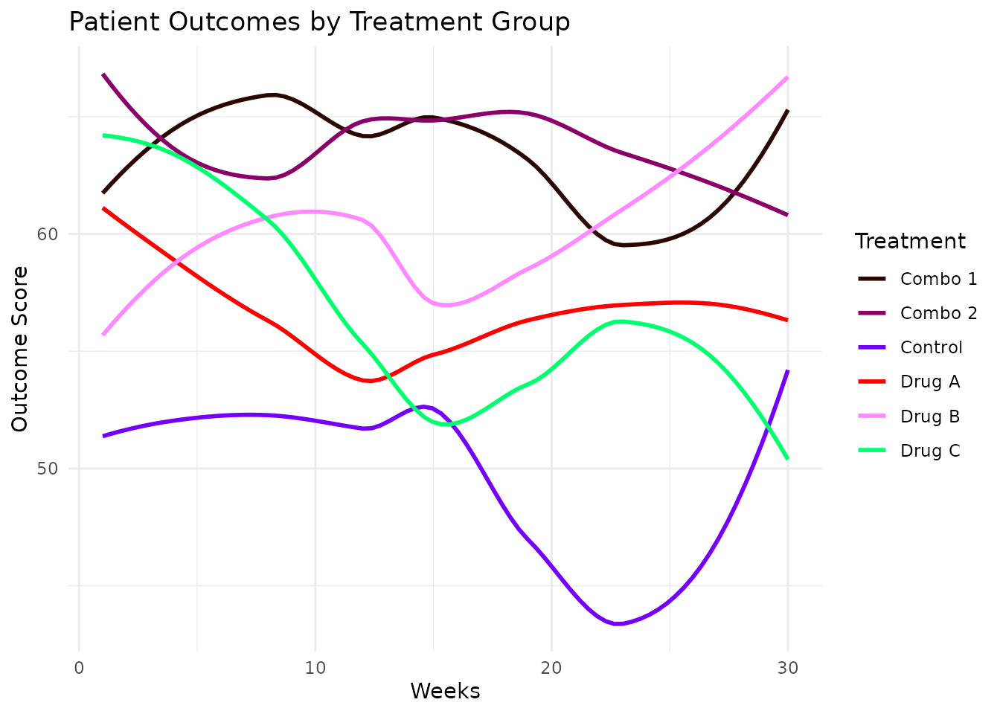
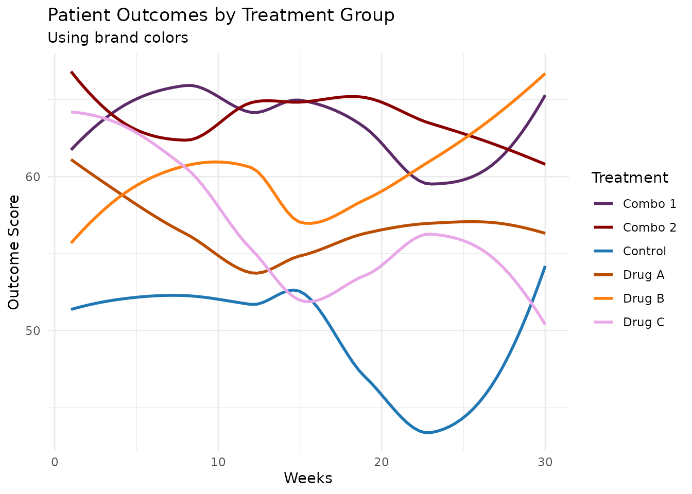
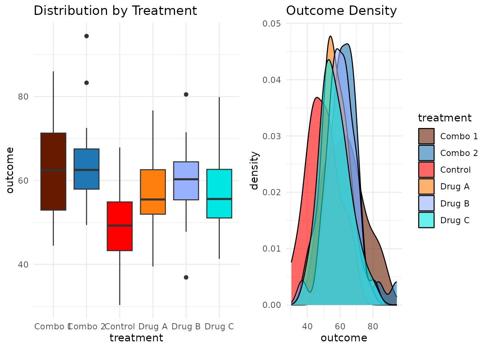
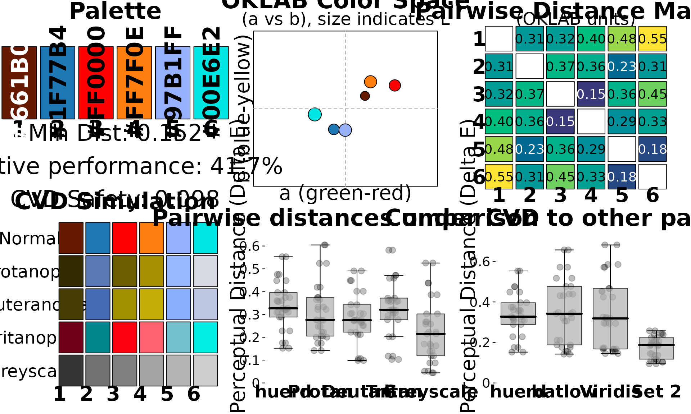
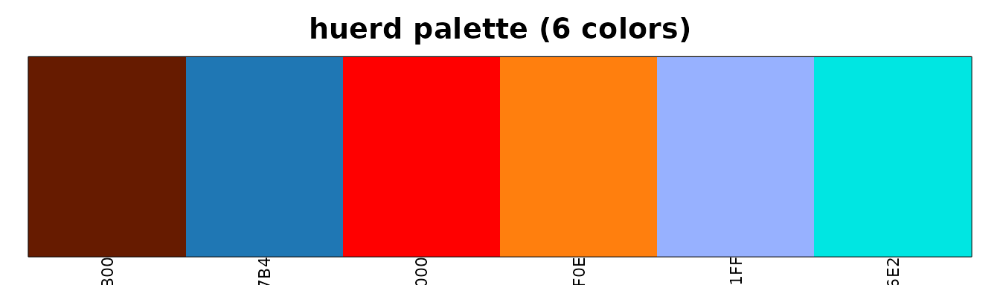

Workflow: Data Scientist Creating Accessible Dashboards
Source:vignettes/data-scientist-workflow.Rmd
data-scientist-workflow.RmdThe Scenario
You’re a data scientist creating a dashboard to visualize patient outcomes across treatment groups. Your requirements are:
- 6 distinct colors for different treatment groups
-
Colorblind-safe for accessibility compliance
- Include company brand colors (a specific blue and orange)
- Easy integration with ggplot2
This vignette walks through how huerd makes this workflow simple and reliable.
Quick Start: The Simple Path
For many use cases, quick_palette() is all you need:
library(huerd)
# Generate a 6-color accessible palette
palette <- quick_palette(6)
print(palette)
#>
#> -- huerd Color Palette (6 colors) --
#> Colors:
#> [ 1] #4C0E00
#> [ 2] #002E8E
#> [ 3] #9A00FF
#> [ 4] #FF0025
#> [ 5] #00FFF5
#> [ 6] #EFE600
#>
#> -- Quality Metrics Summary --
#> * Min. Perceptual Distance (OKLAB): 0.233
#> * Optimizer Performance Ratio : 63.7%
#> * Min. CVD-Safe Distance (OKLAB) : 0.201
#>
#> -- Generation Details --
#> * Optimizer Iterations: 401
#> * Optimizer Status: NLOPT_XTOL_REACHED: Optimization stopped because xtol_rel or xtol_abs (above) was reached.Want to include your brand colors? Just add them:
brand_palette <- quick_palette(
n = 6,
brand_colors = c("#1f77b4", "#ff7f0e") # Your blue and orange
)
print(brand_palette)
#>
#> -- huerd Color Palette (6 colors) --
#> Colors:
#> [ 1] #430096
#> [ 2] #1F77B4
#> [ 3] #FF7F0E
#> [ 4] #B19EFF
#> [ 5] #00FFFF
#> [ 6] #FFEE00
#>
#> -- Quality Metrics Summary --
#> * Min. Perceptual Distance (OKLAB): 0.230
#> * Optimizer Performance Ratio : 63.0%
#> * Min. CVD-Safe Distance (OKLAB) : 0.173
#>
#> -- Generation Details --
#> * Optimizer Iterations: 210
#> * Optimizer Status: NLOPT_XTOL_REACHED: Optimization stopped because xtol_rel or xtol_abs (above) was reached.Using Palettes with ggplot2
huerd provides native ggplot2 integration. No more
scale_color_manual():
library(ggplot2)
# Simulate treatment outcome data
set.seed(123)
treatment_data <- data.frame(
patient_id = 1:180,
treatment = rep(c("Control", "Drug A", "Drug B", "Drug C", "Combo 1", "Combo 2"), each = 30),
outcome = c(
rnorm(30, 50, 10),
rnorm(30, 55, 10),
rnorm(30, 60, 10),
rnorm(30, 58, 10),
rnorm(30, 65, 10),
rnorm(30, 62, 10)
),
time_weeks = rep(1:30, 6)
)
# Plot with automatic huerd palette
ggplot(treatment_data, aes(x = time_weeks, y = outcome, color = treatment)) +
geom_smooth(method = "loess", se = FALSE) +
scale_color_huerd() +
labs(
title = "Patient Outcomes by Treatment Group",
x = "Weeks",
y = "Outcome Score",
color = "Treatment"
) +
theme_minimal()
#> `geom_smooth()` using formula = 'y ~ x'
With Brand Colors
Include your brand colors directly in the scale:
ggplot(treatment_data, aes(x = time_weeks, y = outcome, color = treatment)) +
geom_smooth(method = "loess", se = FALSE) +
scale_color_huerd(brand_colors = c("#1f77b4", "#ff7f0e")) +
labs(
title = "Patient Outcomes by Treatment Group",
subtitle = "Using brand colors",
x = "Weeks",
y = "Outcome Score",
color = "Treatment"
) +
theme_minimal()
#> `geom_smooth()` using formula = 'y ~ x'
Using a Pre-Generated Palette
For consistent colors across multiple plots, generate once and reuse:
# Generate and save your palette
my_palette <- generate_palette(
n = 6,
include_colors = c("#1f77b4", "#ff7f0e"),
progress = FALSE
)
# Use in multiple plots
p1 <- ggplot(treatment_data, aes(x = treatment, y = outcome, fill = treatment)) +
geom_boxplot() +
scale_fill_huerd(palette = my_palette) +
labs(title = "Distribution by Treatment") +
theme_minimal() +
theme(legend.position = "none")
p2 <- ggplot(treatment_data, aes(x = outcome, fill = treatment)) +
geom_density(alpha = 0.6) +
scale_fill_huerd(palette = my_palette) +
labs(title = "Outcome Density") +
theme_minimal()
# Display side by side
gridExtra::grid.arrange(p1, p2, ncol = 2)
Verifying Accessibility
Before finalizing your dashboard, verify accessibility:
Quick Check
is_cvd_safe(my_palette)
#> [1] TRUEDetailed Assessment
interpret_palette_quality(my_palette)
#>
#> ── Palette Quality Assessment ──
#>
#> This 6-color palette is well optimized (42% of theoretical maximum). Excellent
#> - colors are highly distinct and easy to differentiate
#>
#> ── Distinctness
#> Excellent - colors are highly distinct and easy to differentiate
#>
#> ── Accessibility
#> Good - palette should work for most viewers with CVDFull Evaluation
evaluation <- evaluate_palette(my_palette)
# Key metrics for your accessibility report
cat("Minimum color distance:", round(evaluation$distances$min, 3), "\n")
#> Minimum color distance: 0.152
cat("CVD worst-case distance:", round(evaluation$cvd_safety$worst_case_min_distance, 3), "\n")
#> CVD worst-case distance: 0.098
cat("Performance ratio:", round(evaluation$distances$performance_ratio * 100, 1), "%\n")
#> Performance ratio: 41.7 %Visual Diagnostics
For presentations or documentation, use the analysis dashboard:
plot_palette_analysis(my_palette)
Or the simple swatch view:
plot(my_palette)
Summary
For data scientists, huerd provides:
-
quick_palette()- Fast, sensible defaults -
scale_color_huerd()/scale_fill_huerd()- Native ggplot2 integration -
is_cvd_safe()- Quick accessibility verification -
interpret_palette_quality()- Human-readable quality assessment -
plot_palette_analysis()- Comprehensive visual diagnostics
This workflow ensures your visualizations are both beautiful and accessible.